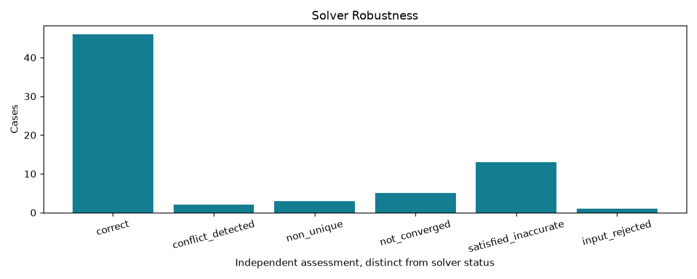

Offline, bounded research controls. A passing check may document a failure or an abstention.
| control_id | solver | family | status | converged | correct | analytic_uniqueness | reported_dof | assessment | checks_pass |
|---|---|---|---|---|---|---|---|---|---|
| rectangle_scale_0.0001_seed_0 | sketch | coordinate_scale | fully_constrained | True | True | unique | 0 | correct | True |
| rectangle_scale_0.0001_seed_1 | sketch | coordinate_scale | fully_constrained | True | True | unique | 0 | correct | True |
| rectangle_scale_1_seed_0 | sketch | coordinate_scale | fully_constrained | True | True | unique | 0 | correct | True |
| rectangle_scale_1_seed_1 | sketch | coordinate_scale | fully_constrained | True | True | unique | 0 | correct | True |
| rectangle_scale_10000_seed_0 | sketch | coordinate_scale | fully_constrained | True | True | unique | 0 | correct | True |
| rectangle_scale_10000_seed_1 | sketch | coordinate_scale | fully_constrained | True | True | unique | 0 | correct | True |
| circle_scale_0.0001_seed_0 | sketch | coordinate_scale | fully_constrained | True | True | unique | 0 | correct | True |
| circle_scale_0.0001_seed_1 | sketch | coordinate_scale | fully_constrained | True | True | unique | 0 | correct | True |
| circle_scale_1_seed_0 | sketch | coordinate_scale | fully_constrained | True | True | unique | 0 | correct | True |
| circle_scale_1_seed_1 | sketch | coordinate_scale | fully_constrained | True | True | unique | 0 | correct | True |
| circle_scale_10000_seed_0 | sketch | coordinate_scale | fully_constrained | True | True | unique | 0 | correct | True |
| circle_scale_10000_seed_1 | sketch | coordinate_scale | fully_constrained | True | True | unique | 0 | correct | True |
| circle_duplicate | sketch | duplicate | over_constrained | True | True | unique | 0 | correct | True |
| circle_conflict | sketch | conflict | inconsistent | False | False | none | 0 | conflict_detected | True |
| circle_free | sketch | free | under_constrained | True | True | continuous | 2 | non_unique | True |
| circle_translated | sketch | translated | fully_constrained | True | True | unique | 0 | correct | True |
| two_distances_s0.001_h1_seed-1 | sketch | initial_near_singular | fully_constrained | True | True | two_branches | 0 | correct | True |
| two_distances_s0.001_h1_seed0 | sketch | initial_near_singular | not_converged | False | False | two_branches | 1 | not_converged | True |
| two_distances_s0.001_h1_seed1 | sketch | initial_near_singular | fully_constrained | True | True | two_branches | 0 | correct | True |
| two_distances_s0.001_h0.001_seed-1 | sketch | initial_near_singular | fully_constrained | True | False | two_branches | 0 | satisfied_inaccurate | True |
| two_distances_s0.001_h0.001_seed0 | sketch | initial_near_singular | over_constrained | True | False | two_branches | 1 | satisfied_inaccurate | True |
| two_distances_s0.001_h0.001_seed1 | sketch | initial_near_singular | fully_constrained | True | False | two_branches | 0 | satisfied_inaccurate | True |
| two_distances_s0.001_h1e-06_seed-1 | sketch | initial_near_singular | fully_constrained | True | False | two_branches | 0 | satisfied_inaccurate | True |
| two_distances_s0.001_h1e-06_seed0 | sketch | initial_near_singular | over_constrained | True | True | two_branches | 1 | correct | True |
| two_distances_s0.001_h1e-06_seed1 | sketch | initial_near_singular | fully_constrained | True | False | two_branches | 0 | satisfied_inaccurate | True |
| two_distances_s0.001_h0_seed-1 | sketch | initial_near_singular | fully_constrained | True | False | unique_singular | 0 | satisfied_inaccurate | True |
| two_distances_s0.001_h0_seed0 | sketch | initial_near_singular | over_constrained | True | True | unique_singular | 1 | correct | True |
| two_distances_s0.001_h0_seed1 | sketch | initial_near_singular | fully_constrained | True | False | unique_singular | 0 | satisfied_inaccurate | True |
| two_distances_s1_h1_seed-1 | sketch | initial_near_singular | fully_constrained | True | True | two_branches | 0 | correct | True |
| two_distances_s1_h1_seed0 | sketch | initial_near_singular | not_converged | False | False | two_branches | 1 | not_converged | True |
| two_distances_s1_h1_seed1 | sketch | initial_near_singular | fully_constrained | True | True | two_branches | 0 | correct | True |
| two_distances_s1_h0.001_seed-1 | sketch | initial_near_singular | fully_constrained | True | True | two_branches | 0 | correct | True |
| two_distances_s1_h0.001_seed0 | sketch | initial_near_singular | not_converged | False | False | two_branches | 1 | not_converged | True |
| two_distances_s1_h0.001_seed1 | sketch | initial_near_singular | fully_constrained | True | True | two_branches | 0 | correct | True |
| two_distances_s1_h1e-06_seed-1 | sketch | initial_near_singular | fully_constrained | True | False | two_branches | 0 | satisfied_inaccurate | True |
| two_distances_s1_h1e-06_seed0 | sketch | initial_near_singular | over_constrained | True | True | two_branches | 1 | correct | True |
| two_distances_s1_h1e-06_seed1 | sketch | initial_near_singular | fully_constrained | True | False | two_branches | 0 | satisfied_inaccurate | True |
| two_distances_s1_h0_seed-1 | sketch | initial_near_singular | fully_constrained | True | False | unique_singular | 0 | satisfied_inaccurate | True |
| two_distances_s1_h0_seed0 | sketch | initial_near_singular | over_constrained | True | True | unique_singular | 1 | correct | True |
| two_distances_s1_h0_seed1 | sketch | initial_near_singular | fully_constrained | True | False | unique_singular | 0 | satisfied_inaccurate | True |
| two_distances_s1000_h1_seed-1 | sketch | initial_near_singular | fully_constrained | True | True | two_branches | 0 | correct | True |
| two_distances_s1000_h1_seed0 | sketch | initial_near_singular | not_converged | False | False | two_branches | 1 | not_converged | True |
| two_distances_s1000_h1_seed1 | sketch | initial_near_singular | fully_constrained | True | True | two_branches | 0 | correct | True |
| two_distances_s1000_h0.001_seed-1 | sketch | initial_near_singular | fully_constrained | True | True | two_branches | 0 | correct | True |
| two_distances_s1000_h0.001_seed0 | sketch | initial_near_singular | not_converged | False | False | two_branches | 1 | not_converged | True |
| two_distances_s1000_h0.001_seed1 | sketch | initial_near_singular | fully_constrained | True | True | two_branches | 0 | correct | True |
| two_distances_s1000_h1e-06_seed-1 | sketch | initial_near_singular | fully_constrained | True | True | two_branches | 0 | correct | True |
| two_distances_s1000_h1e-06_seed0 | sketch | initial_near_singular | over_constrained | True | True | two_branches | 1 | correct | True |
| two_distances_s1000_h1e-06_seed1 | sketch | initial_near_singular | fully_constrained | True | True | two_branches | 0 | correct | True |
| two_distances_s1000_h0_seed-1 | sketch | initial_near_singular | fully_constrained | True | True | unique_singular | 0 | correct | True |
| two_distances_s1000_h0_seed0 | sketch | initial_near_singular | over_constrained | True | True | unique_singular | 1 | correct | True |
| two_distances_s1000_h0_seed1 | sketch | initial_near_singular | fully_constrained | True | True | unique_singular | 0 | correct | True |
| circle_rhs_-1e-10 | sketch | numerical_perturbation | fully_constrained | True | True | unique | 0 | correct | True |
| circle_rhs_1e-10 | sketch | numerical_perturbation | fully_constrained | True | True | unique | 0 | correct | True |
| pose_s0.0001_seed0 | assembly | scale_seed_perturbation | fully_constrained | True | True | unique | 0 | correct | True |
| pose_s0.0001_seed1 | assembly | scale_seed_perturbation | fully_constrained | True | True | unique | 0 | correct | True |
| pose_s1_seed0 | assembly | scale_seed_perturbation | fully_constrained | True | True | unique | 0 | correct | True |
| pose_s1_seed1 | assembly | scale_seed_perturbation | fully_constrained | True | True | unique | 0 | correct | True |
| pose_s100_seed0 | assembly | scale_seed_perturbation | fully_constrained | True | True | unique | 0 | correct | True |
| pose_s100_seed1 | assembly | scale_seed_perturbation | fully_constrained | True | True | unique | 0 | correct | True |
| pose_outside_distance_domain | assembly | input_domain | rejected | False | False | unique | not_evaluated | input_rejected | True |
| pose_near_1 | assembly | difficult | fully_constrained | True | True | unique | 0 | correct | True |
| pose_near_0.001 | assembly | difficult | fully_constrained | True | False | unique | 0 | satisfied_inaccurate | True |
| pose_near_1e-06 | assembly | difficult | redundant | True | False | unique | 1 | satisfied_inaccurate | True |
| pose_near_0 | assembly | difficult | redundant | True | True | continuous | 1 | non_unique | True |
| pose_duplicate | assembly | duplicate | redundant | True | True | unique | 0 | correct | True |
| pose_conflict | assembly | conflict | inconsistent | False | False | none | 0 | conflict_detected | True |
| pose_free | assembly | free | under_constrained | True | True | continuous | 1 | non_unique | True |
| pose_rhs_-1e-09 | assembly | scale_seed_perturbation | fully_constrained | True | True | unique | 0 | correct | True |
| pose_rhs_1e-09 | assembly | scale_seed_perturbation | fully_constrained | True | True | unique | 0 | correct | True |
Detailed evidence · CSV · Contract
